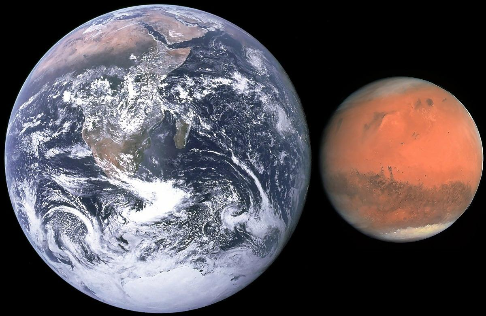

Earth
Earth is great because:
- It's in the Goldilocks Zone, where wataer can be liquid.
- By volume, it contains 20.95% oxygen in its atmosphere.
- It has a stil-molten core!
- WE LIVE ON IT!!
Mars
 hi little horsie, fly
Saturn
Saturn is an icy gas giant (being an average of -178°C), and has very promenent rings. It also has the largest number of moons of any of the planets in the Solar System.
Formation
Saturn formed together with the rest of the solar system about 4.5 billion years ago. Gravity pulled swirling gas and dust together to create the gas giant. About 4 billion years ago, Saturn settled into its current position in the outer solar system.
Composition
Saturn is made up mostly of hydrogen and helium, though some metals, like iron and nickel, and hot rocks nearer the core. There is thought to be a solid core about the size of Earth in the very center of the planet.
This page does not exist. ☹
Alpha Centuri
Alpha Centuri is a three star system, including the closest star to our Sun.
Stars
Alpha Centuri contains three stars: Alpha Centuri A (Rigil Kentaurus), Alpha Centuri B (Toliman), and Alpha Centuri C, the famous Proxima Centuri. Proxima Centauri is also the closest star to the Sun at 4.2465 light years (1.3020 pc). Alpha Centuri A
and B are class G and H respectivly, making up the binary star system Alpha Centuri AB. Alpha Centuri C is a small red dwarf, invisible to the naked eye.
Alpha Centuri AB